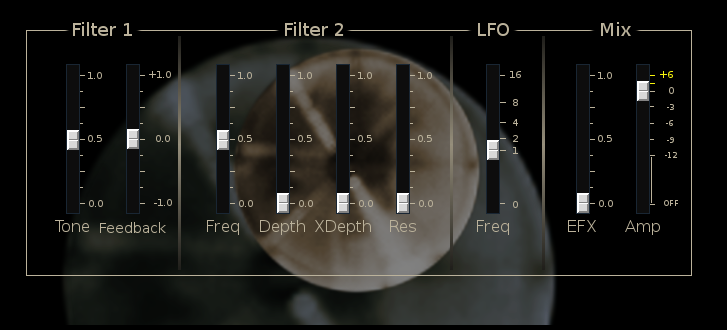

| Home | Contents | Synth Catalog | Previous: FXStack | Next: Hund Envelope Follower |
The Galvaniser is an adaptation of the Metalizer effect provided by Cubase. It does not have exactly the same sound but is useful in it;s own right. Basically it is a fixed comb filter followed by a modulated band pass filter.
| Home | Contents | Synth Catalog | Previous: FXStack | Next: Hund Envelope Follower |